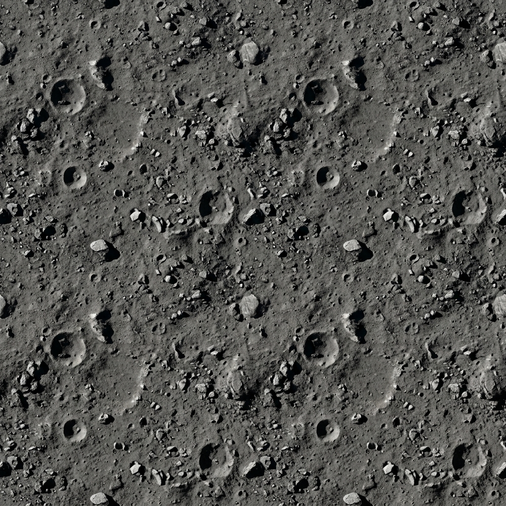

v0 · Concept
Cardboard / recycle-bin layout to set wheelbase and CoG. Trade study: wheels vs tracks.
HUNCH expects visible iteration — not a single jump to final CAD.
v0 · Concept
Cardboard / recycle-bin layout to set wheelbase and CoG. Trade study: wheels vs tracks.
v1 · CAD skeleton
generate_rover_cad.py → truss, tracks, mast meshes. Torque calc in hardware spec.

v2 · Digital twin
Autopilot sim validates slope, slip, pit guard — see runbook scenarios.
Open sim →v3 · Bench + build
PETG prints, MDD10A wiring, PWM/sensor bench scripts. FMEA drives vent and power revisions.